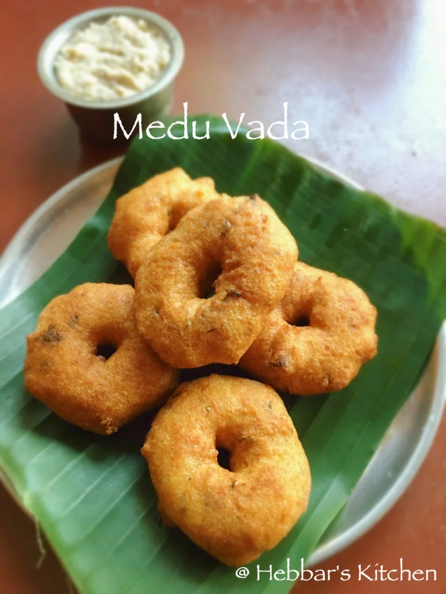

Vada

Description
"I once had a picture of vada on my bedroom in which I would pray to before sleeping every day." - Curtis Stone
A deep-fried fritter made with urad dal and spices.
Ingredients
- 1 cups of urad dal or uddina bele
- ¼ cup of channa dal or kadle bele
- 2 tsp of rice flour
- 2 green chillies
- 3 tbsp of coconut (chopped)
- a few curry leaves
- 1 tbsp coriander leaves (chopped)
- 1 inch ginger (finely chopped)
- A pinch of hing
- Table salt
- Oil for frying
Steps
- Wash and soak dal in about 3 cups of water for about 2-3 hours.
- Drain all the water from soaked dal. Grind urad dal and channa dal together to smooth paste using very little water. An authentic grinding stone can be used, but a wet grinder or even a mixer grinder can also be used.
- The batter should be thick and use very little water. The right consistency is very important or otherwise, you will not be able to get the vada shape.
- Add coriander, green chilli, ginger and chopped dry coconut to the batter. Mix it very well.
- Add 2-3 tsp of rice flour. Rice flour is added to make it crispy.
- Add a pinch of hing to make it more digestable.
- Heat the oil in a frying pan in medium flame. Wet your palms and take a lemon size batter.
- Make a hole in the centre and slide it into the hot oil. The vada should float on top of the oil.
- Make sure your oil is not too hot. Otherwise the vadas would not cook evenly.
- Fry on both sides till it becomes golden brown in colour.
- Serve medu vada immediately with chutney or sambar of your preference.